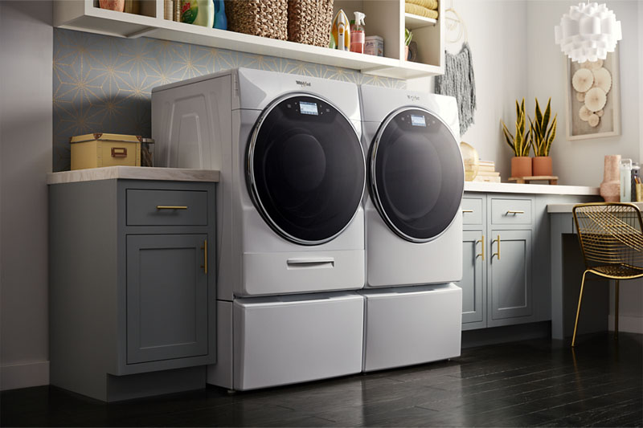

At CleanX Laundry we offer several services. From a quick wash to a proper cleansing we do it all.
Whether it is a quick wash, a professional dry clean or a full care package your fabric we make sure your clothes are spotless, fresh and in other terms perfect.
Before diving deep into our services let's take a look at the reviews of our valuable customer:
CleanX made cleaning so easy. It is so affordable and the products helped me revive my damaged clothes and brought shine of my pretty clothes back
Emily Parker
The customer service is so amazing. Staff is really helpful and suggest best ideas. I want to thank CleanX from core of my heart. Thank you guys for making laundry easy for me.
Linda White
CleanX is definetly a go to for my laundry. It is so convinient and super affordable. Omg I am so thankful to you guys for helping me in cleaning my clothes
Briana Harris
My god CleanX had to be best laundry shop I have tried so far. You guys helped me so much in keeping my clothes bright and pretty which my schedule could never. Thank you so much guys
Maggie Smith
From washing my laundry to ironing or dry-cleaning or getting it done all together CleanX is my go to. You guys made my life so easy.You guys did great job, thank you guys.
Rei Brown
CleanX had been a great buddy for me since its starting. I thought it to be a random laundry shop but since the time I started taking services from CleanX I never ever though about other services.
Alex Trimmer
If our customer reviews held your interest then let's take a closer and deep look at the services we offer:
Washing
While washing we use high quality detergents that are gentle to your clothes but at same time these make sure there is no dirt.
Softeners make your clothes soft and are gentle on your fabric. These products are good friends of your garments but worst nightmares of stains.
Our deep cleansing techniques ensure freshness and care of all your clothes.
Ironing
Got your clothes wrinkled and tangled? Don't worry we are here for your rescue.
Say goodbye to your wrinkles! Our team use right temperature and technique for giving a crisp and professional finish that makes you look sharp and confident.
Washing & Ironing (Both)
Wanna get your clothes clean along with perfectly ironed clothes? Don't worry, we give you best of both worlds.
You can get clean clothes and perfectly ironed clothes, ready to wear.
This combo service can save you time and effort while giving proper and clean finish and care to your clothes.
Dry Cleaning
Our eco-friendly method of dry-cleaning removes dirt, oil, and stains from delicate fabrics.
We make sure to give special care to your special garments. Our techniques for dry-cleaning preserves the color, texture and quality of your fabric.
Complete package (Washing, Dry-cleaning, Ironing)
This package is specially for customers who want it all.
From washing your clothes to dry-cleaning and ironing them, we take care of everything.
We aim to make sure that each piece of your clothing looks and feels perfect.
It is a perfect deal for families, professionals and students with busy schedules.

CleanX Laundry makes sure there is no load on your shoulders for your laundry.